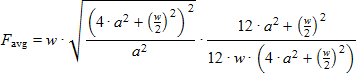
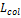
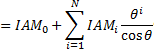
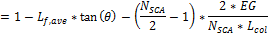

Collectors (SCAs)#
A collector (SCA, solar collector assembly) is an individually tracking component of the solar field that includes mirrors, a supporting structure, and receivers.
On the Collectors page, you can define the characteristics of up to four collector types. On the Solar Field page single loop configuration, you specify how the different collector types are distributed in each loop of the field, assuming that the field consists of identical loops. SAM only uses data for collector types that you have included in the single loop configuration on the Solar Field page
Note
For a detailed explanation of the physical trough model, see Wagner, M. J.; Gilman, P. (2011). Technical Manual for the SAM Physical Trough Model. 124 pp.; NREL Report No. TP-5500-51825. https://docs.nlr.gov/docs/fy11osti/51825.pdf (3.7 MB)
Collector Library#
The physical trough model’s collector library contains a set of collector parameters for several commercially available collectors. You can either use parameters from the library, or type your own parameter values.
To apply values from the library:
In the list of collectors at the top of the page, click a collector name. You can click a column heading to sort the list.
For the collector type to which you want to apply the parameters from the library, click Apply Values from Library. SAM will replace the collector geometry, and optical parameter values with values from the library.
You can modify the values after you apply the library values.
Collector Type and Configuration Name#
- Collector Type
Choose the active SCA type (1-4). SAM displays the properties of the active SCA type on the Collectors page. You can assign different properties to each of the up to four collector types. See Specifying the Loop Configuration for details on including different SCA types in the solar field.
- Configuration Name
The name of library entry for the receiver type.
Collector Geometry#
- Reflective aperture area (m**2****)**
The total reflective area of a single collector, used to calculate the loop aperture area of a loop, and number of loops required for a solar field with the aperture area defined on the Solar Field page .
- Aperture width, total structure (m)
The structural width of the collector, including reflective and non-reflective area. SAM uses this value to calculate row-to-row shadowing and blocking effects.
- Length of collector assembly (m)
The length of a single collector assembly.
- Number of modules per assembly
The number of individual collector-receiver sections in a single collector.
- Average surface-to-focus path length (m)
The average distance between the collector surface and the focus of the parabola. This value is not equal to the focal length of the collector. To calculate the value when you know the focal length and aperture width, use the following equation, where Favg is the average surface-to-focus path length:

Where a is the focal length at the vertex, and w is the aperture width
- Piping distance between assemblies (m)
Length of pipes and hoses connecting collectors in a single row, not including the length of crossover pipes.
- Length of single module (m)
The length of a single collector-receiver module, equal to the collector assembly length divided by the number of modules per assembly.
Optical Parameters#
- Tracking error
Accounts for reduction in absorbed radiation error in collectors tracking caused by poor alignment of sun sensor, tracking algorithm error, errors caused by the tracker drive update rate, and twisting of the collector end at the sun sensor mounting location relative to the tracking unit end.
- Geometry effects
Accounts for errors in structure geometry caused by misaligned mirrors, mirror contour distortion caused by the support structure, mirror shape errors compared to an ideal parabola, and misaligned or distorted receiver.
- Mirror reflectance
The mirror reflectance input is the solar weighted specular reflectance. The solar-weighted specular reflectance is the fraction of incident solar radiation reflected into a given solid angle about the specular reflection direction. The appropriate choice for the solid angle is that subtended by the receiver as viewed from the point on the mirror surface from which the ray is being reflected. For parabolic troughs, typical values for solar mirrors are 0.923 (4-mm glass), 0.945 (1-mm or laminated glass), 0.906 (silvered polymer), 0.836 (enhanced anodized aluminum), and 0.957 (silvered front surface).
- Dirt on mirror
Accounts for reduction in absorbed radiation caused by soiling of the mirror surface. This value is not linked to the mirror washing variables on the Solar Field page .
- General optical error
Accounts for reduction in absorbed radiation caused by general optical errors or other unaccounted error sources.
Optical Calculations#
The optical calculations are values that SAM calculates using the equations described below. You cannot directly edit these values.
Length of single module

used in End Loss at Design described below.= Length of Collector Assembly ÷ Number of Modules per Assembly
- Incidence angle modifier at summer solstice
Not used in actual efficiency calculation. Provided as reference only. Theta is in radians.

- End loss at summer solstice
Optical end loss at noon on the summer solstice due to reflected radiation spilling off of the end of the collector assembly. This value is provided as a reference and is not used in determining the design of the solar field.

- Optical efficiency at design
The collector’s optical efficiency under design conditions.
= Tracking Error × Geometry Effects × Mirror Reflectance × Dirt on Mirror × General Optical Error
Solar Position/Collector Incidence Angles#
You can select one of three options for characterizing the optical performance of the solar field. The three methods determine how the optical efficiency varies with sun position.
The optical efficiency is defined as follows:
Optical Efficiency = Total Thermal Energy Absorbed by Receiver ÷ ( Direct Normal Irradiance × Actual Aperture Area )
- Solar position table
The solar position table option allows you to specify optical efficiency of the solar field as a function of solar azimuth and zenith angles. SAM uses a solar azimuth angle convention where true North is equal to -180/+180° and South equals 0°. The solar zenith angle is zero when the sun is directly overhead and 90° when the sun is at the horizon.
The solar position may contain any number of rows and columns, but should contain enough information to fully define the performance of the solar field at all sun positions for which the field will operate. The table must contain more than one row and column.
- Field incidence angle table
The field incidence angle table option allows you to specify solar field optical efficiency as a function of the longitudinal and transversal solar incidence angles.
- Incidence Angle Modifier Coefficients
Coefficients for a polynomial equation defining the incidence angle modifier equation.
Use the incidence angle modifier coefficients table to specify coefficients for the equation. The default coefficients are for an equation with three terms, but you can use the table to specify more coefficients.
The equation captures the degradation of collector performance as the incidence angle (theta) of the solar radiation increases.
During simulations, SAM limits the value of the incidence angle modifier that it calculates to values between 0 and 1, inclusive.
Solar Position/Collector Incidence Angle Table#
- Import
Import a table from a text or data file. The file can contain values separated by comma, space, or tab characters, but must be formatted according to the following rules:
The first row in the file specifies the angles for the solar azimuth (for the Solar position table) or collector transversal incidence (for the Collector incidence angle table). The first entry of this row should be blank.
Each additional row specifies optical efficiency for a specific zenith angle (for the Solar position table) or longitudinal incidence angle (for the Collector incidence angle table). The first entry of the row must be the zenith or longitudinal incidence angle corresponding to the optical efficiency entries in that row.
The rows of the table should be sorted according to zenith/longitudinal incidence angle from lowest to highest.
An example tab-delimited table is as follows, where numbers in bold correspond to the solar zenith (row headers) and azimuth (column headers) angles:
-180 90 0 90 180
0 1.0 1.0 1.0 1.0 1.0
30 0.95 0.98 0.99 0.98 0.95
60 0.60 0.70 0.75 0.70 0.60
90 0.0 0.0 0.0 0.0 0.0
Note that SAM automatically sizes the table on the Collector and Receiver page to match the size of the array that is being imported.
- Export
Export the optical efficiency table on the Collector and Receiver page to a text file.
- Copy
Copy the optical efficiency table on the Collector and Receiver page to the clipboard for transfer to an optical efficiency table in another case or to other text applications.
- Paste
Paste an optical efficiency table from another SAM case or from a text file into the active case.
- Rows
Specify the number of desired rows in the table.
- Cols
Specify the number of desired columns in the table.